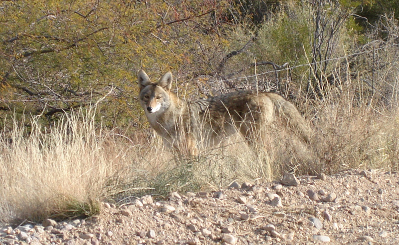
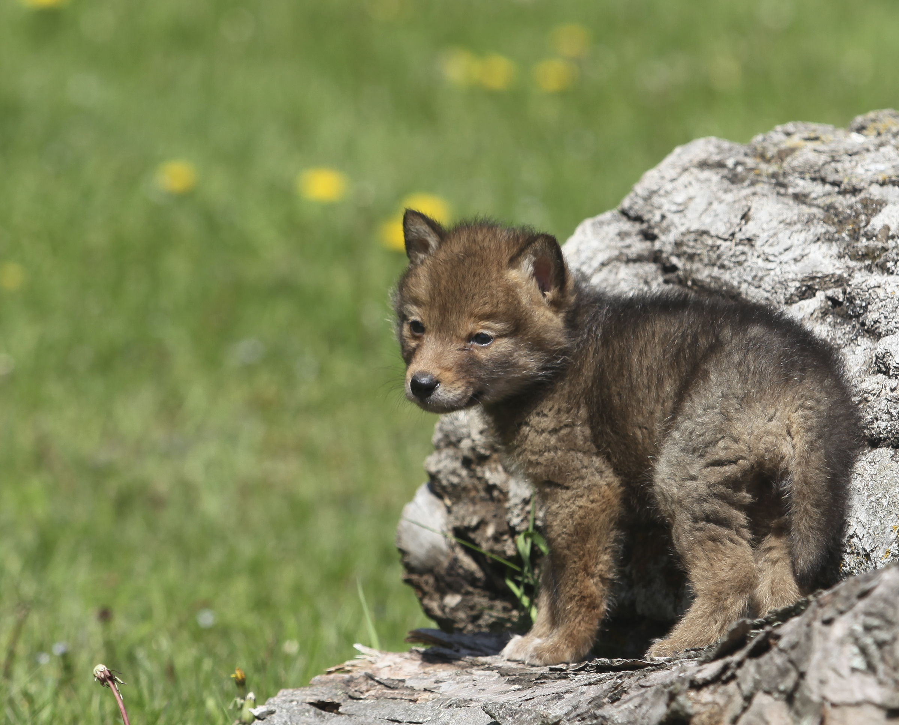
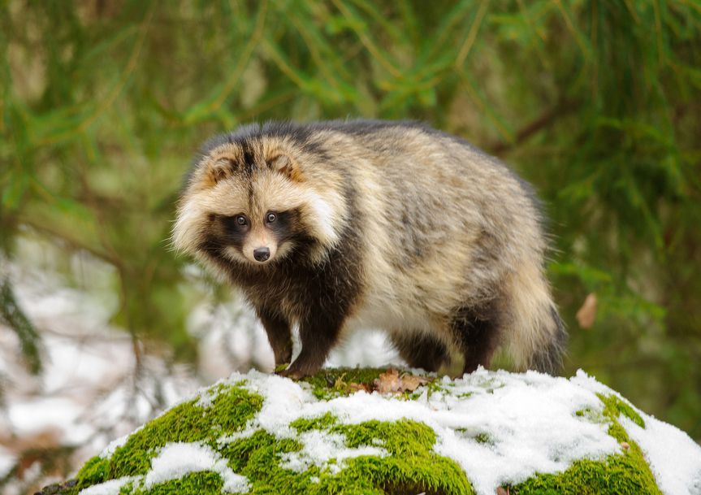
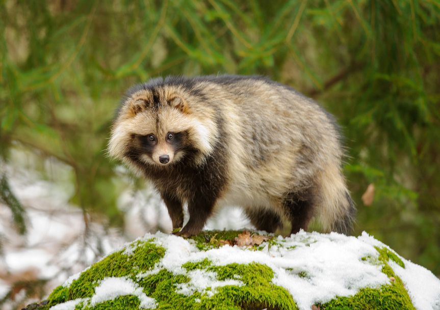
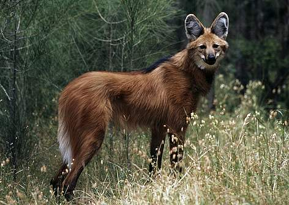
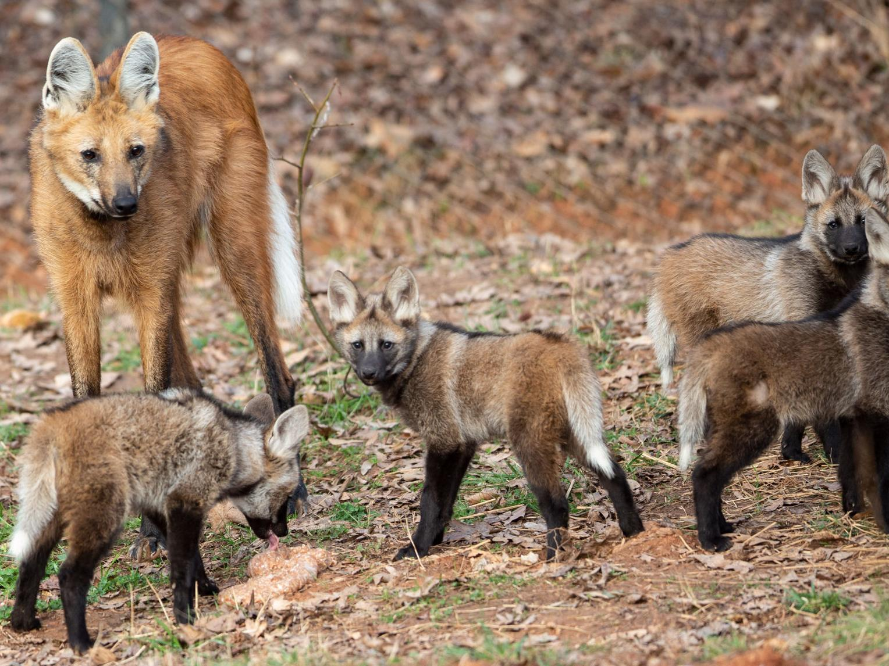

Homepage Wolves Foxes Coyote, Tanuki, And Maned Wolf Quiz Canine Images
.jpg)

The Coyote, or Canis Latrans, is found in North America. It is typically light gray with a white underside. Males weigh 18-44 pounds, while females weigh 15-40 pounds. They are 3.3-4.3 feet long. It is found in plains, fields, and other bushy areas. Their dens can be found in a rocky crevice, log, cave, or den of another animal. Coyotes normally don't dig their own den. Instead, they typically find an abandoned fox or badger den and enlarge it. Here is a picture of a coyote:
Coyotes are primarily carnivorous, but they will eat berries and other fruits at times. Their favorite food is small mammals, birds, and snakes. In the winter, they will eat fruits, berries, and vegetables. They prefer fresh kill, but they will also eat carrion. When hunting small prey, a coyote will stand still with its legs stiff and then pounce on its prey. When hunting large prey, like deer, they will hunt in packs. Coyotes have many different vocalizations. These include barks, yips, growls, whines, and howls. It uses a long howl to let other members of the pack know where it is, short barks to warn of danger, yipping to welcome a new pack member, growling when establishing dominance, whining and whimpering when establishing bonds, and high pitched barks to call puppies. They mate from Feburary to April, and, two months after mating, will give birth to between 1 and 19 pups. Here is a picture of Coyote pups:
The Raccoon Dog, also known as the Tanuki, is native to Eastern Asia and Northern Vietnam. Its scientific name is Nyctereutes Procyonoides for the Common Raccoon Dog, and the Japanese Raccoon Dog is Nyctereutes Viverrinus. It looks and acts a lot like a raccoon. In Japan, the Raccoon Dog is regarded as a mythical creature and is highly respected. They get 20-26 inches in length, with a tail length of 13-18 inches, and typically weigh around 16.5 pounds. Their beautiful, soft, warm fur makes them perfect targets for the fur trade. Despite this, they are still quite abundant, even becoming invasive species in European countries. They live for 6-7 years. Here is a picture of the Common Raccoon Dog and, right after it, a picture of the Japanese Raccoon Dog:
.jpg) 

The Raccoon Dog is a nocturnal omnivore, feeding on small animals, fish, vegetation, and carrion. In the winter, they will hibernate. They mate in January, Feburary, and March. They give birth to 1-19 pups from April-May. Here is a picture of a Raccoon Dog pup:

The Maned Wolf, or Chrysocyon Brachyurus, is an animal that looks like a tall fox, and is called a wolf, but is not related to wolves or foxes at all. They have a thick red coat, long black legs, and tall ears. They stand about 3 feet tall and weigh around 50 pounds. They range throughout Central and South America. This includes Northern Argentina, South and Central Brazil, Paraguay, and Southern Peru. They mark their territory by spraying urine and feces on termite mounds and hillocks along their territorial borders. Here is a picture of a Maned Wolf:
They do not howl, but instead, they emit loud barks or roar to let their mate know where they are, and to warn other Maned Wolves to stay away. They have only one mate at a time, and they mate from April to June. They give birth to 1-5 pups about 63-67 days later. Here is a picture of Maned Wolf pups with an adult:
